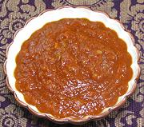

|
Tomato Baharat SauceEgypt | ||||
| Makes: Effort: Sched: DoAhead: |
2 cups ** 40 min Yes |
Tomato sauces of this sort are popular in Egypt for use with Koshari, which is practically Egypt's "national dish". Baharat spicing gives it a warm, rich flavor typical of the region. | |||
|
6 3 3 24 ------- 3 1/4 1-1/2 1 1/3 ------- |
oz cl T oz --- t t T t t --- |
Onion Garlic Olive Oil Tomato Sauce (1) -- Seasonings Baharat spices (2) Chili flake (3) Wine Vinegar, red Salt Pepper, black --------------- |
Make - (40 min - 20 min work)
|